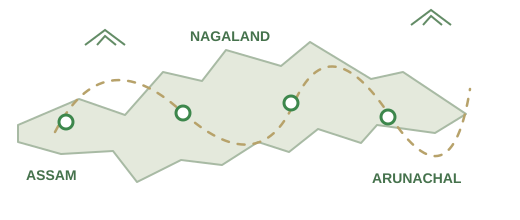

GREEN MILES · TRAVEL STUDIO
Good to see you, explorer.
Everything for the next great North-East adventure lives here. Keep your packages fresh, answer enquiries and announce what's coming.

FOLLOW THE TRAIL ↗
OPERATIONS AT A GLANCE
View all enquiries ↗Business overview
0New enquiries
10Published starter trips
1Upcoming example departure
1Active announcement
INBOX
See all →Recent enquiries
When travelers submit enquiries, they will appear here after you connect the real Laravel app.
Design-only preview. Real Filament dashboard connects to the database and requires login at /manage.